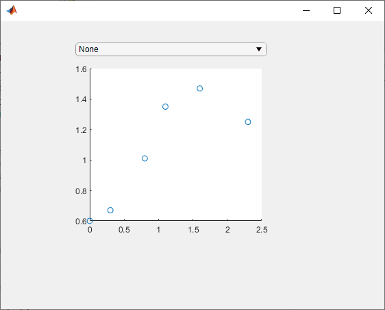
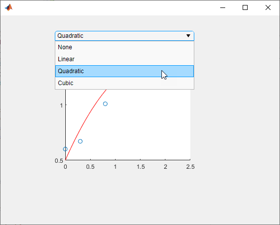
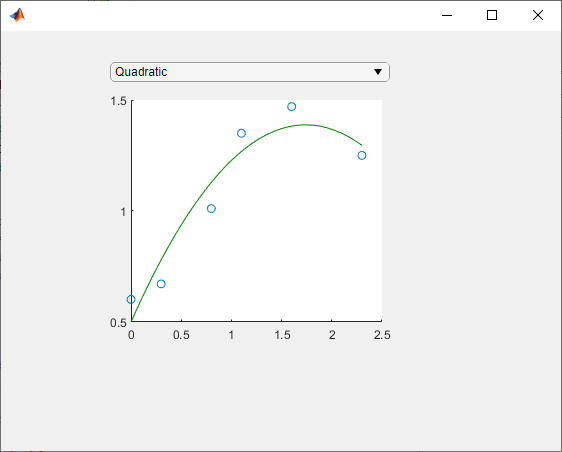

Manage Properties of Custom UI Components Programmatically
When you develop a custom UI component as a subclass of the
ComponentContainer base class, you can use certain techniques to make
your code more robust, efficient, and user-friendly. These techniques focus on how you
define and manage the properties of your class. Use any that are helpful for the type of
component you want to create and the user experience you want to provide.
Initialize Property Values — Set the default state of the UI component in case your users call the implicit constructor without any input arguments.
Validate Property Values — Ensure that the values are valid before using them.
Customize the Property Display — Provide a customized list of properties in the Command Window when a user references the UI component object without a semicolon.
Optimize the update Method — Improve the performance of the
updatemethod when only a subset of your properties are used in a time-consuming calculation.
For an example of these techniques, see Example: Optimized Polynomial Fit UI Component with Customized Property Display.
In addition, there are certain considerations and limitations to keep in mind if you want to use your custom UI component in App Designer, or share your component with users who develop apps in App Designer. These considerations are listed on a separate page, in Configure Custom UI Components for App Designer.
Initialize Property Values
Assign default values for all of the public properties of your class. This allows MATLAB to create a valid UI component even if the user omits some name-value arguments when they call the constructor method.
For UI components that contain a chart and have properties that store coordinate
data, set the initial values to NaN values or empty arrays so
that the default chart is empty when the user does not specify the
coordinates.
Validate Property Values
Before your code uses property values, confirm that they have the correct size and class. For example, this property block validates the size and class of three properties.
properties LineColor {validateattributes(LineColor,{'double'}, ... {'<=',1,'>=',0,'size',[1 3]})} = [1 0 0] XData (1,:) double = NaN YData (1,:) double = NaN end
LineColor must be a 1-by-3 array of class
double, where each value is in the range
[0,1]. Both XData and
YData must be row vectors of class
double.
You can also validate properties that store the underlying component objects in
your UI component. To do this, you need to know the correct class name for each
object. To determine the class name of an object, call the corresponding UI
component function at the command line, and then call the class
function to get the class name. For example, if you plan to create a drop-down
component in your setup method, call the uidropdown function at the command
line with an output argument. Then, pass the output to the
class function to get its class
name.
dd = uidropdown; class(d)
ans =
'matlab.ui.control.DropDown'Use the output of the class function to validate the class
for the corresponding property in your class. Specify the class after the property
name. For example, the following property stores a DropDown
object and validates its
class.
properties (Access = private, Transient, NonCopyable) DropDown matlab.ui.control.DropDown end
Occasionally, you might want to define a property that can store different shapes and classes of values. For example, if you define a property that can store a character vector, cell array of character vectors, or string array, omit the size and class validation or use a custom property validation method. For more information about validating properties, see Validate Property Values.
Customize the Property Display
One of the benefits of defining your UI component as a subclass of the
ComponentContainer base class is that it also inherits from
the matlab.mixin.CustomDisplay class.
This lets you customize the list of properties MATLAB® displays in the Command Window when you reference the UI component
without a semicolon. To customize the property display, overload the getPropertyGroups method.
Within that method, you can customize which properties are listed and the order of
the list. For example, consider a FitPlot class that has the
following public
properties.
properties LineColor {validateattributes(LineColor,{'double'}, ... {'<=',1,'>=',0,'size',[1 3]})} = [1 0 0] XData (1,:) double = NaN YData (1,:) double = NaN end
The following getPropertyGroups method specifies the scalar
object property list as XData, YData, and
LineColor.
function propgrp = getPropertyGroups(comp) if ~isscalar(comp) % List for array of objects propgrp = getPropertyGroups@matlab.mixin.CustomDisplay(comp); else % List for scalar object propList = {'XData','YData','LineColor'}; propgrp = matlab.mixin.util.PropertyGroup(propList); end end
When the user references an instance of this UI component without a semicolon, MATLAB displays the customized list.
p = FitPlot
p =
FitPlot with properties:
XData: NaN
YData: NaN
LineColor: [1 0 0]For more information about customizing the property display, see Customize Property Display.
Optimize the update Method
In most cases, the update method of your class reconfigures all
the relevant aspects of your UI component that depend on the public properties.
Sometimes, the reconfiguration involves an expensive calculation that is time
consuming. If the calculation involves only a subset of the properties, you can
design your class to execute that code only when it is necessary.
One way to optimize the update method is to add these elements
to your class:
A private property called
ExpensivePropChangedthat accepts alogicalvalue. This property indicates whether any of the properties used in the expensive calculation have changed.A
setmethod for each property involved in the expensive calculation. Within eachsetmethod, set theExpensivePropChangedproperty totrue.A protected method called
doExpensiveCalculationthat performs the expensive calculation.A conditional statement in the
updatemethod that checks the value ofExpensivePropChanged. If the value istrue, executedoExpensiveCalculation.
The following code provides a template for this design.
classdef OptimizedUIComponent < matlab.ui.componentcontainer.ComponentContainer properties Prop1 Prop2 end properties(Access=private,Transient,NonCopyable) ExpensivePropChanged (1,1) logical = true end methods(Access = protected) function setup(comp) % Configure UI component % ... end function update(comp) % Perform expensive computation if needed if comp.ExpensivePropChanged doExpensiveCalculation(comp); comp.ExpensivePropChanged = false; end % Update other aspects of UI component % ... end function doExpensiveCalculation(comp) % Expensive code % ... end end methods function set.Prop2(comp,val) comp.Prop2 = val; comp.ExpensivePropChanged = true; end end end
In this case, Prop2 is involved in the expensive calculation.
The set.Prop2 method sets the value of Prop2,
and then it sets ExpensivePropChanged to true.
The next time the update method runs, it calls
doExpensiveCalculation only if
ExpensivePropChanged is true. Then, the
update method continues to update other aspects of the UI
component.
Example: Optimized Polynomial Fit UI Component with Customized Property Display
This example defines a FitPlot class for interactively
displaying best fit polynomials, and uses all four of these best practices. The
properties defined in the properties block have default values and use size and
class validation. The getPropertyGroups method defines a custom
order for the property display. The changeFit method performs the
potentially expensive polynomial fit calculation, and the update
method executes changeFit only if the plotted data
changed.
To define this class, save the FitPlot class definition to a
file named FitPlot.m in a folder that is on the MATLAB path.
classdef FitPlot < matlab.ui.componentcontainer.ComponentContainer % Choose a fit method for your plotted data properties LineColor {validateattributes(LineColor,{'double'}, ... {'<=',1,'>=',0,'size',[1 3]})} = [1 0 0] XData (1,:) double = NaN YData (1,:) double = NaN end properties (Access = private, Transient, NonCopyable) DropDown matlab.ui.control.DropDown Axes matlab.ui.control.UIAxes GridLayout matlab.ui.container.GridLayout DataLine (1,1) matlab.graphics.chart.primitive.Line FitLine (1,1) matlab.graphics.chart.primitive.Line FitXData (1,:) double FitYData (1,:) double ExpensivePropChanged (1,1) logical = true end methods (Access=protected) function setup(comp) % Set the initial position of this component comp.Position = [100 100 300 300]; % Create the grid layout, drop-down, and axes comp.GridLayout = uigridlayout(comp,[2,1], ... 'RowHeight',{20,'1x'},... 'ColumnWidth',{'1x'}); comp.DropDown = uidropdown(comp.GridLayout, ... 'Items',{'None','Linear','Quadratic','Cubic'}, ... 'ValueChangedFcn',@(s,e) changeFit(comp)); comp.Axes = uiaxes(comp.GridLayout); % Create the line objects comp.DataLine = plot(comp.Axes,NaN,NaN,'o'); hold(comp.Axes,'on'); comp.FitLine = plot(comp.Axes,NaN,NaN); hold(comp.Axes,'off'); end function update(comp) % Update data points comp.DataLine.XData = comp.XData; comp.DataLine.YData = comp.YData; % Do an expensive operation if comp.ExpensivePropChanged comp.changeFit(); comp.ExpensivePropChanged = false; end % Update the fit line comp.FitLine.Color = comp.LineColor; comp.FitLine.XData = comp.FitXData; comp.FitLine.YData = comp.FitYData; end function changeFit(comp) % Calculate the fit line based on the drop-down value if strcmp(comp.DropDown.Value,'None') comp.FitXData = NaN; comp.FitYData = NaN; else switch comp.DropDown.Value case 'Linear' f = polyfit(comp.XData,comp.YData,1); case 'Quadratic' f = polyfit(comp.XData,comp.YData,2); case 'Cubic' f = polyfit(comp.XData,comp.YData,3); end comp.FitXData = linspace(min(comp.XData),max(comp.XData)); comp.FitYData = polyval(f,comp.FitXData); end end function propgrp = getPropertyGroups(comp) if ~isscalar(comp) % List for array of objects propgrp = getPropertyGroups@matlab.mixin.CustomDisplay(comp); else % List for scalar object propList = {'XData','YData','LineColor'}; propgrp = matlab.mixin.util.PropertyGroup(propList); end end end methods function set.XData(comp,val) comp.XData = val; comp.ExpensivePropChanged = true; end function set.YData(comp,val) comp.YData = val; comp.ExpensivePropChanged = true; end end end
Define some sample data and use it to create an instance of
FitPlot.
x = [0 0.3 0.8 1.1 1.6 2.3]; y = [0.6 0.67 1.01 1.35 1.47 1.25]; p = FitPlot('XData',x,'YData',y)
ans =
FitPlot with properties:
XData: [1×43 double]
YData: [1×43 double]
LineColor: [1 0 0]
Use the drop-down to display the quadratic best fit curve.

Set the LineColor property to change the color of the best fit
curve to green.
p.LineColor = [0 0.5 0];
